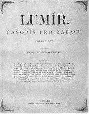
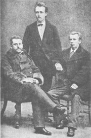
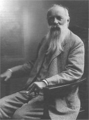
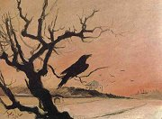
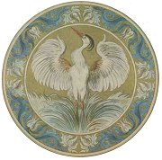
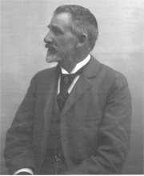
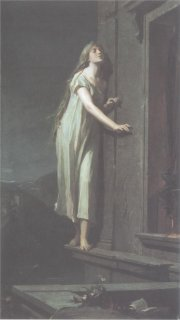
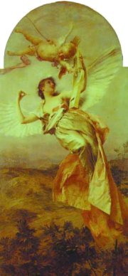
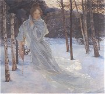
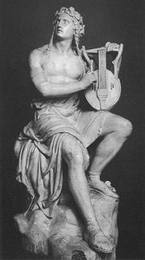

Èasopis Lumír
|
LUMÍROVCI neboli KOSMOPOLITNÍ ŠKOLA
Lumírovci dostali název podle beletristického èasopisu Lumír, ve kterém publikovali svá díla. Tento èasopis vycházel v letech 1873 a� 1940 a byl nejdéle vycházejícím literárním èasopisem v Èechách. Lumír zalo�il Neruda s Hálkem, ale orgánem nové generace spisovatelù se stal a� po roce 1877, kdy se v jeho èele ocitl Josef Václav Sládek. Kromì Sládka do nìj pøispívali Jaroslav Vrchlickı, Julius Zeyer a další lumírovci. Prostor zde dostávali i ruchovci nebo májovci. Na rozdíl od nich se lumírovci zamìøovali na cizí literatury a pøekladatelskou èinnost, proto se nìkdy oznaèují termínem kosmopolitní škola. V èasopise vycházela pùvodní èeská tvorba a pøeklady zahranièní literatury. Vìnoval se také historii a literární vìdì. Nejprve šlo o tıdeník, pozdìji o desetideník. Ve 20. století se vedení èasopisu ujal Viktor Dyk, to u� mìl ale Lumír své nejslavnìjší období za sebou.
|

Zeyer, Sládek a Vrchlickı
|
Jaroslav Vrchlickı (1853-1912)
Emil Frída se narodil v Lounech a zemøel v Doma�licích. Studoval filozofii a historii, pobıval v Itálii jako vychovatel a pozdìji pùsobil jako profesor srovnávacích dìjin literárních. O�enil se s dcerou spisovatelky Sofie Podlipské Ludmilou, která ho podvádìla s jinım mu�em. Vrchlickı patøil k nejplodnìjším èeskım autorùm. Jenom básnickıch sbírek napsal více ne� osmdesát! Kromì toho se vìnoval dramatické tvorbì. Psal komedie – Noc na Karlštejnì i tragédie – Hippodamie (Námluvy Pelopovy, Smír Tantalùv, Smrt Hippodamie). Pøekládal z francouzštiny (Hugo), italštiny (Dante), nìmèiny (Goethe) a angliètiny (Whitman). Básnická tvorba Jaroslava Vrchlického má blízko k francouzskım parnasistùm a jejich akademickému idealismu. Jeho poezie je jazykovì velmi vytøíbená, ale èastokrát v ní vítìzí forma nad obsahem.

Fotografickı ateliér Langhans: Jaroslav Vrchlickı
Vrchlického epigoni
Velikost Jaroslava Vrchlického dokazuje i to, �e mìl øadu napodobitelù (Bohdan Kaminskı, Antonín Klášterskı...). Tito epigoni vìtšinou nepøinesli do literatury nic nového. Vıjimkou byl re�isér Jaroslav Kvapil (1868-1950), autor libreta k Dvoøákovì Rusalce a divadelní hry Princezna Pampeliška.
Zjisti pøesnı vıznam slova epigon.
|
Vrchlického lyrika
Vrchlickı debutoval básnickou sbírkou Z hlubin. Z jeho bohaté lyrické tvorby patøí k nejlepším knihy Sny o štìstí, Rok na Jihu, Eklogy a písnì, Dojmy a rozmary, Poutí k Eldorádu, Hudba v duši, Hoøká jádra, È morta, Okna v bouøi nebo Meè Damoklùv. Vìnoval se hlavnì milostné poezii.
Jaroslav Vrchlickı: Zlomky epopeje
Vlastní epickou tvorbu shrnul Vrchlickı do rozsáhlého cyklu Zlomky epopeje, nazvaného podle jedné ze svıch sbírek. Zaøadil sem napøíklad knihy Vittoria Colonna, Duch a svìt, Sfinx, Dìdictví Tantalovo, Brevíø moderního èlovìka, Skvrny na slunci, Mıty (Legenda o sv. Prokopu), Hilarion, Twardowski, Selské balady, Bozi a lidé nebo Bar Kochba.
Jaroslav Vrchlickı: Noc na Karlštejnì
Zápletka komedie Noc na Karlštejnì vychází z povìsti, podle ní� Karel IV. zakázal všem �enám pøístup na svùj hrad Karlštejn. Jeho man�elka se rozhodne nesmyslné naøízení porušit a vloudí se na hrad v pøestrojení za pá�e.
|
Která z básní Jaroslava Vrchlického tì zaujala nejvíce? Proè?
Znáš i jiné básnì tohoto autora? Vyber si jakoukoliv z jeho básní a nauè se ji recitovat zpamìti.
Které básnické formy zmiòuje Vrchlickı ve své básni Má poetika? Co o nich víš?
Najdi v díle Jaroslava Vrchlického pøíklady tìchto forem. Vìnoval se i jinım �ánrùm?
Která z ukázek má formu sestiny? Co je sestina?

Jaroslav Èermák: Studie dívky
Kterı francouzskı básník napsal obdobnı cyklus epickıch básní zachycující osudy lidstva?
Srovnej oba básnické cykly.
Co víš o Tantalovi a Hippodamii?
Co je brevíø?
Kdo byli Vittoria Colonna, Bar Kochba a Twardowski?

Aleš: Karlštejnskı havran
Podle Noci na Karlštejnì byl natoèen slavnı filmovı muzikál. Srovnej oba scénáøe.
Odpovídá Vrchlického komedie historické skuteènosti?
Co víš o Karlu IV.?
|
Julius Zeyer (1841-1901)
Zeyerovım rodištìm byla Praha, pobıval ve Vodòanech a skonal v Praze. Otec pocházel z francouzského a matka z nìmeckého jazykového prostøedí, mìl ale èeskou chùvu. Rodièe chtìli, aby pøevzal rodinnı podnik na zpracování døeva, syn se však vìnoval vıhradnì literatuøe. Cestoval po Evropì a Orientu, byl vychovatelem v Rusku a na pra�ské univerzitì studoval starovìké kultury a filozofii. Zùstal svobodnı. Zeyer psal originální parafráze dávnıch nebo orientálních pøíbìhù – cykly Obnovené obrazy, Z letopisù lásky, Vyšehrad nebo Karolinská epopeja a eposy V soumraku bohù (islandské ságy) nebo Grizelda (Dekameron). Autobiografické rysy najdeme v lyrickoepické básni Troje pamìti Víta Choráze a románu Jan Maria Plojhar. Dále napsal romány Ondøej Èernyšev a Román o vìrném pøátelství Amise a Amila, romaneto Dùm U tonoucí hvìzdy a øadu próz – Fantastické povídky, Tøi legendy o krucifixu, Zahrada mariánská, Blaho v zahradì kvetoucích broskví atd. Z dramat je nejznámìjší pohádka Radúz a Mahulena a komedie dell’arte Stará historie.
Která díla jsou souèástí cyklù Obnovené obrazy, Z letopisù lásky, Karolinská epopeja a Tøi legendy o krucifixu?
Zeyerova tvorba
Zeyer bıvá pova�ován za novoromantika. Pro jeho tvorbu je typická záliba v exotickıch látkách, mıtech, povìstech a fantastickıch námìtech, vypjatá citovost a mystická zbo�nost. Nezvyklé námìty mù�eme chápat jako únik od chmurné reality do vysnìného svìta støedovìkıch rytíøù a pohanskıch mıtù, kdy lidé pro�ívali opravdové city, byli schopni lásky a� za hrob a èest nebo ideály nebyly pouhım slovem. Zeyerovi se zdálo, �e jeho díla nejsou dostateènì oceòována. Pøipadal si nepochopenı, �il v ústraní a nesnášel malé èeské pomìry. Jeho tvorbu oceòovala i nová generace dekadentù. Spolupracoval s malíøkou Zdeòkou Braunerovou a sochaøem Františkem Bílkem. Byl pohøben na vyšehradském Slavínì.
Srovnej tøi ukázky Zeyerovy tvorby. Co mají spoleèného? V èem se liší?
Najdi v Zeyerovıch dílech romantické rysy.

Aleš: Volavka
|
Julius Zeyer: Jan Maria Plojhar
Jan Maria Plojhar je zhnusen provinèní atmosférou v Èechách, a proto cestuje po svìtì. Pro�ije vášnivı románek s knì�nou Dragopulos, ale ta ho brzy odvrhne. Jan je vá�nì zranìn v souboji a zmítá se na pokraji smrti. Navíc ho mamonáøskı švagr pøipraví o rodinné sídlo Havranice, ke kterému mìl niternı vztah. Plojhar se odjí�dí léèit do Itálie, kde se seznamuje s Catarinou. Jejich láska ale konèí tragicky. Plojhar vá�nì onemocní a zemøe. Catarina bez nìj nechce �ít a radìji spáchá sebevra�du.
V Zeyerovì románu se propojuje souèasnost s bájnou minulostí. Catarina vypije jed v poslední hodinì Janova �ivota, aby jejich duše vstoupily do nebe spoleènì. Symbolicky si nasadí na hlavu èelenku, která byla nalezena v hrobì etruské dívky. Ta se nechala dobrovolnì pohøbít s milovanım mu�em.
Julius Zeyer: Radúz a Mahulena
Dramatická pohádka Radúz a Mahulena se odehrává v Tatrách. Kralevic Radúz zabloudí bìhem lovu do zemì krále Strojmíra, nepøítele svého otce. Zabije bílého jelena princezny Mahuleny a za trest je pøikován ke skále. Mahulena se do Radúze zamiluje a osvobodí ho. Její matka Runa ale Radúze prokleje. Jakmile kralevice políbí jiná �ena, zapomene na Mahulenu. Kletbu naplní Radúzova matka a neš�astná Mahulena prosí zemi, aby ji promìnila ve strom. Radúz chodí jako ve snách k topolu, kde je uvìznìna. Jeho matka se rozhodne strom porazit, ale z kmene zaène prıštit krev. A� teï se Radúzovi vrací pamì�. Strom se rozlomí a vyjde z nìj krásná Mahulena.
Julius Zeyer: Román o vìrném pøátelství Amise a Amila
Slo�itı dìj Románu o vìrném pøátelství Amise a Amila spøádá dohromady nìkolik mıtù a legend. Pøátelé Amis a Amil jsou si k nerozeznání podobni, proto�e jde o potomky dvou dcer Raula a Belisanty. Od poustevníka Gastona, kterı jejich babièku miloval, se dozvídají, �e uctívala sochu boha Adóna, ale kdy� ji znièil, Belisantì puklo srdce. Amil se zamiluje do princezny Jolanty a s pøítelovou pomocí ji získá za man�elku. Amis vzplane láskou k islandské princeznì Thorgerdì, ale ta ho nemiluje. Její jedinou touhou je stát se valkırou jako její babièka. Dozví se, kde je zakopán kouzelnı pás valkır, ale kdy� ho najde, Amis ji o nìj pøipraví. Thorgerda se prohlásí za jeho otrokyni a vezme si Amise za mu�e, nakonec se jí ale podaøí pás získat a uvrhne na nenávidìného man�ela malomocenství. Amise mù�e vysvobodit pouze krvavá obì� dvou Amilovıch dìtí. Vše konèí dobøe díky zázraku Panny Marie. Thorgerda je pøemo�ena a dìti o�iveny.
Další lumírovci a jejich díla
Irma Geisslová: Imortely
|

Fotografickı ateliér Langhans: Julius Zeyer
Pøevyprávìj pøíbìh o Naèiketasovi. Ze které oblasti a doby pochází?
Jak se tento pøíbìh vztahuje k dìji románu?
Pøelo� øecké jméno Dragopulos do èeštiny.

Maxmilián Pirner: Námìsíèná
Jakı je vztah mezi hlavními postavami Zeyerova dramatu – Strojmírem, Runou, Prijou, �ivou, Mahulenou, Radúzem a Nyolou?
Charakterizuj jednotlivé postavy.

Hynais: Poezie
K èemu slou�il Cernnunos a Bifrost?
Nakresli ilustraci k Zeyerovu románu.

Hynais: Zima
|
Internetové stránky
Vrchlickı: Noc na Karlštejnì
Vrchlickı: Moderní básníci angliètí
Vrchlickı: Má vlast, básnì
Zeyer: Ctirad, báseò
�enatová: Støedovìká francouzská hrdinská epika a její odraz v èeské literatuøe, diplomová práce
Geisslová: Imortely
Lumír
Tipy
Lumír, obnovená verze èasopisu
Filmy
Radúz a Mahulena, re�ie P.Weigel
Noc na Karlštejnì, re�ie Z.Podskalskı
|
Doporuèená èetba
Balajka, Bohuš: Jaroslav Vrchlickı, Melantrich, Praha 1979
Kvapil, Josef Šofferle: Gotickı Zeyer, Praha 1942
O národní literaturu, Z úvah a polemik doby májovcù a lumírovcù, Melantrich, Praha 1990
Pohádkové drama , NLN, Praha 1999 (Radúz a Mahulena, Princezna Pampeliška...)
Sny o štìstí, Ruchovci a lumírovci, Èeskoslovenskı spisovatel, Praha 1986
Spisy Julia Zeyera (34 svazkù), Èeská grafická unie
Voborník, J.: Julius Zeyer, Praha 1919
Vrchlickı, Jaroslav: Básnì, Èeskoslovenskı spisovatel, Praha 1973
Vrchlickı, J.: Host na zemi, Èeskoslovenskı spisovatel
Vrchlickı, J.: Intimní lyrika, NLN, Praha 2000
(Rok na jihu, Hoøká jádra, Okna v bouøi)
Vrchlickı, J.: Pøed branami Eldoráda, Èeskoslovenskı spisovatel, Praha 1983
Vrchlickı, J.: Zlomky epopeje, Melantrich, Praha 1950 (Zlomky epopeje, Nové zlomky epopeje, Selské balady)
Zeyer, Julius: Dùm U tonoucí hvìzdy, Chvojkovo nakladatelství, Praha 1996
Zeyer, J.: Jan Maria Plojhar, Tøi legendy o krucifixu, Èeskoslovenskı spisovatel, Praha 1976
Zeyer, J.: Karolinská epopeja, Èeská grafická unie
Zeyer, J.: Ondøej Èernyšev, Èeská grafická unie, Praha 1930
Zeyer, J.: Román o vìrném pøátelství Amise a Amila, Odeon, Praha 1983
Zeyer, J.: Troje pamìti Víta Choráze
|
Vypracuj písemnı referát o nìkteré z uvedenıch knih.

Václav Levı: Lumír
|
|